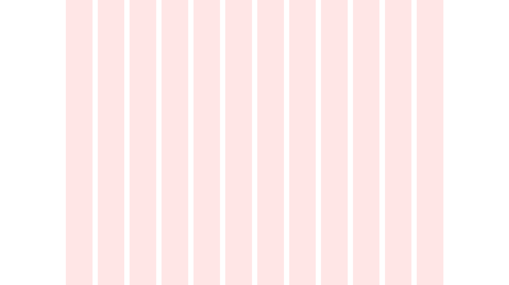
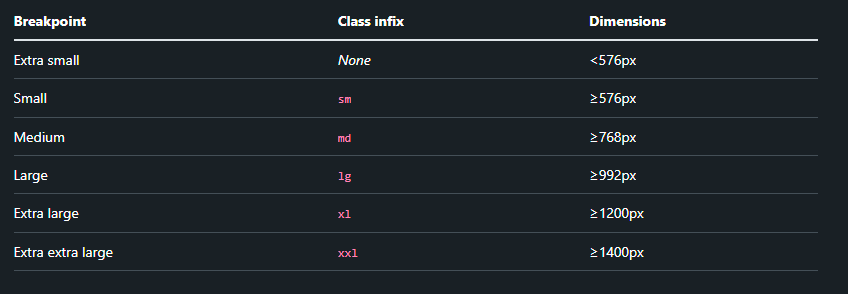

Урок 2 На чём строится Bootstrap
Структура HTML-страницы
Bootstrap не изменяет базовую структуру HTML, но предоставляет ряд готовых компонентов и шаблонов, которые упрощают создание веб-страниц и делают их более адаптивными.
Bootstrap использует гибкую сеточную систему для организации элементов на странице. Сеточная система состоит из колонок, которые могут быть разного размера и занимать разное количество мест на странице.
Первое, что нужно знать про работу bootstrap - это контрольные точки, или же Breakpoints (точки останова).
Контрольные точки - это настраиваемые значения ширины, которые определяют поведение вашего отзывчивого макета в зависимости от размера устройства или области просмотра в Bootstrap. Используйте их, чтобы контролировать, когда ваш макет может быть адаптирован к определенному экрану просмотра или размеру устройства.
Так же используйте медиа-запросы для проектирования CSS по точкам останова. Медиа-запросы — это функция CSS, которая позволяет условно применять стили на основе набора параметров браузера и операционной системы. Чаще всего используется min-width в наших медиа-запросах.
Доступные точки останова
Bootstrap включает шесть точек останова по умолчанию, иногда называемых уровнями сетки , для адаптивного построения. Эти точки останова можно настроить, если вы используете исходные файлы Sass.
Контейнеры
Контейнеры — это фундаментальный строительный блок Bootstrap, который содержит, дополняет и выравнивает ваш контент в пределах данного устройства или области просмотра.
Как они работают?
Контейнеры — это самый основной элемент макета в Bootstrap, который необходим при использовании системы сеток по умолчанию. Контейнеры используются для размещения, заполнения и (иногда) центрирования содержимого внутри них. Хотя контейнеры могут быть вложенными, для большинства макетов вложенный контейнер не требуется. Bootstrap поставляется с тремя разными контейнерами:
-
.container, который устанавливаетmax-widthдля каждой адаптивной контрольной точки -
.container-{breakpoint}, то естьwidth: 100%до указанной контрольной точки -
.container-fluid, то есть width: 100% во всех контрольных точках
Контейнер по умолчанию
Наш .container класс по умолчанию представляет собой адаптивный контейнер фиксированной ширины, что означает его max-width изменения в каждой точке останова.

<div class="container">
<!-- Content here -->
</div>
Адаптивные контейнеры
Адаптивные контейнеры позволяют указать класс шириной 100 % до тех пор, пока не будет достигнута указанная точка останова, после чего мы применяем max-width для каждой из более высоких точек останова. Например, .container-smширина начинается с 100 %, пока sm не будет достигнута точка останова, после чего масштабирование будет увеличиваться с помощью md lg xl и xxl.
<div class="container-sm">100% wide until small breakpoint</div>
<div class="container-md">100% wide until medium breakpoint</div>
<div class="container-lg">100% wide until large breakpoint</div>
<div class="container-xl">100% wide until extra large breakpoint</div>
<div class="container-xxl">100% wide until extra extra large breakpoint</div>
Fluid контейнеры
Используйте .container-fluid для контейнера полной ширины, охватывающего всю ширину области просмотра.
<div class="container-fluid">
<!-- Content here -->
</div>
На этом всё. В этом уроке мы рассмотрели лишь то, куда помещать ваш контент, а в следующем уроке, мы разберём как этот контент размещать
 Следующий урок
Следующий урок
 Перейти к тесту
Перейти к тесту